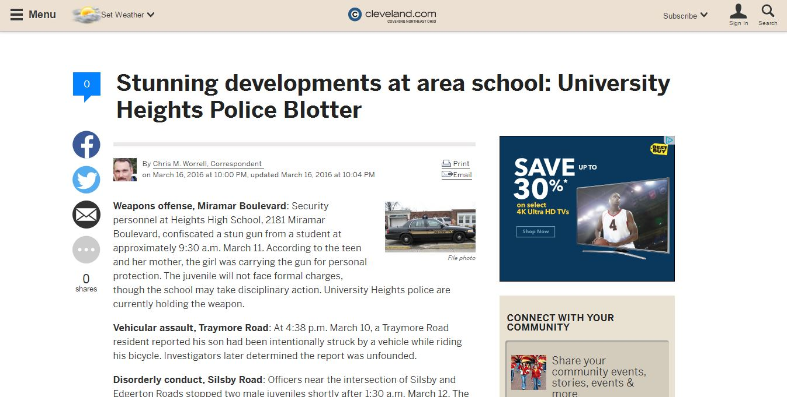
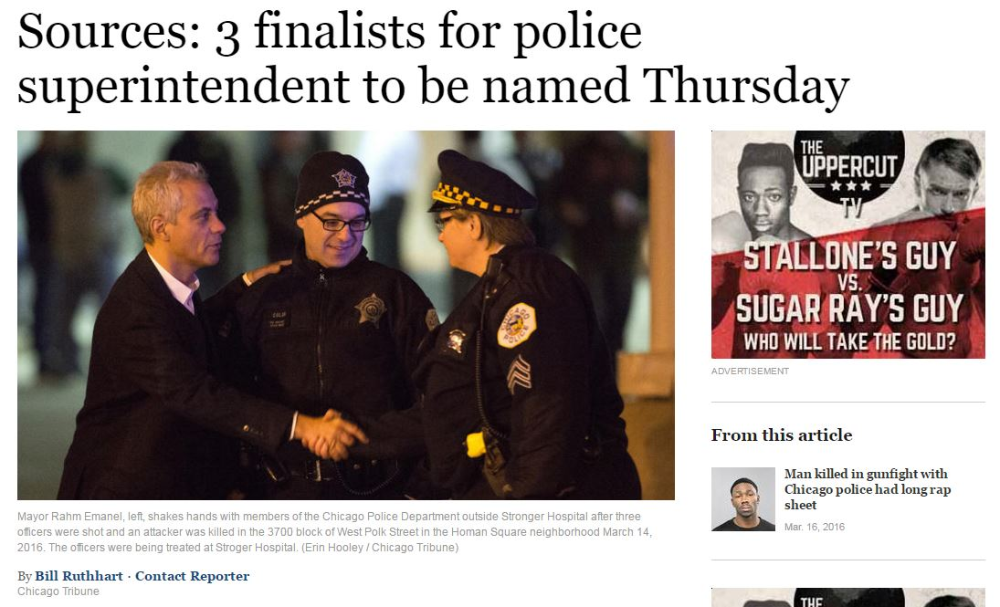
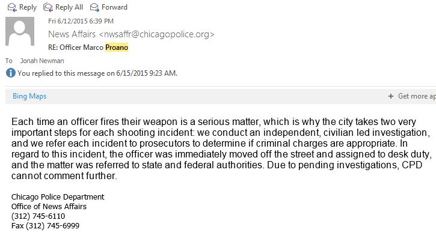
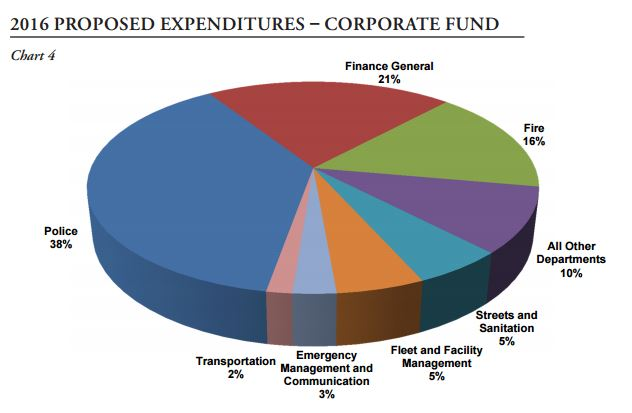

Police and the Media
CRIM 290: Police & Society | Dominican University
March 23, 2016
Jonah Newman | The Chicago Reporter | @jonahshai
What are some ways you see police in the news?
Different kinds of police stories
Police blotter

Police policies/City hall

How do police communicate with the media?
Media affairs office
Press releases
Press conferences
Anonymous sources
Freedom of Information Act
Successful information sources:
- Non-police source
- Lawsuit/Court records
- FOIA - Disciplinary records
Less successful:
- Police officers
- Media affairs

Why might there sometimes be tension between police and the media?
Is that tension a problem?
